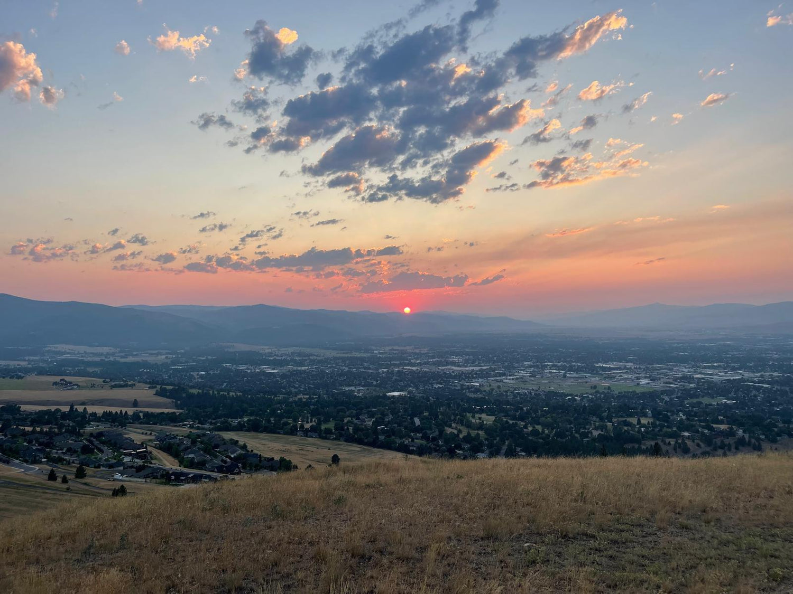
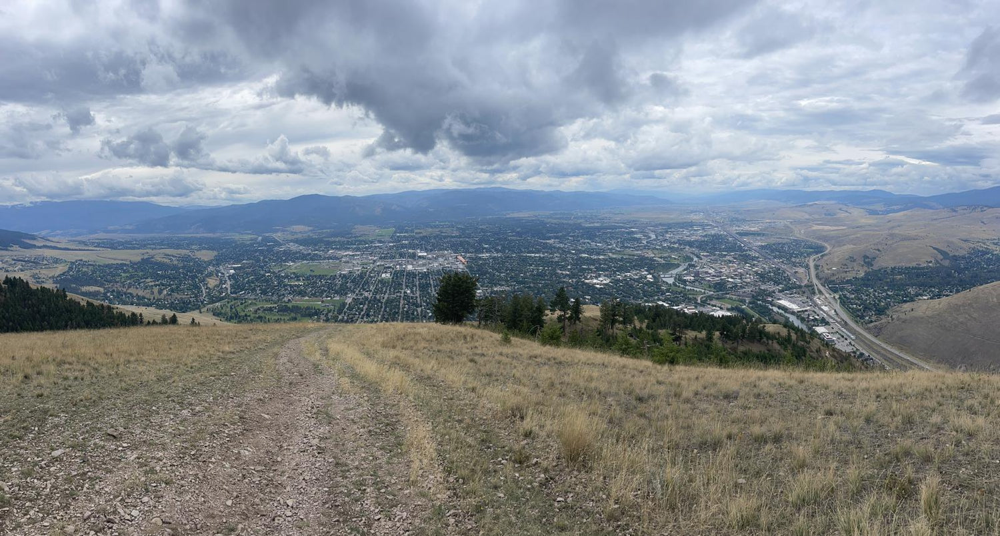
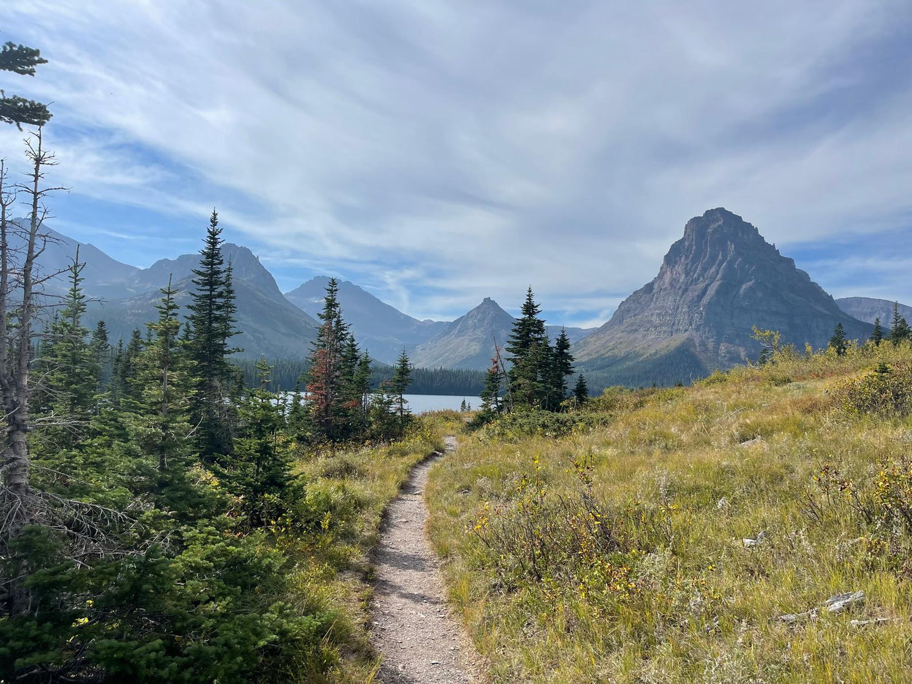

Leadership
Why Leaders Need Emotional Healing
High performance without emotional integration is a debt that eventually comes due. Here's why the inner work isn't a distraction from leadership — it's the foundation of it.
Read more →
Retreat Leader · Conscious Business · Inner Work
Immersive retreats and experiences designed to help leaders reconnect with their hearts, their purpose, and the natural world.
Twenty years. High performance. The corridors of Dun & Bradstreet, OppenheimerFunds, Flextrade. A CFO leading global operations across billions in revenue. Every external marker of success — and underneath it, the quiet weight of imbalance. Stress wearing the mask of ambition. Disconnection dressed as discipline.
A 10-day Vipassana retreat. Then another. Kundalini yoga at dawn. Breathwork in the dark. Slowly, the noise quieted and something older and wiser began to speak. Meditation wasn't an escape from life — it was a return to it. Nature became the greatest teacher I had ever had.
Now I guide leaders through the same threshold I once crossed. Not away from their ambition — but into a deeper, more sustainable version of it. One rooted in emotional presence, nervous system health, and the kind of inner clarity that makes everything else possible.
Immersive nature-based experiences in Montana's wild landscapes. Multi-day containers designed to strip away the noise and return you to yourself.
Sacred containers for healing and reflection. Fire circles, breathwork ceremonies, and intentional rituals that activate deeper layers of awareness.
Bringing emotional intelligence and inner work into business. For leaders ready to build organizations that are as whole as they are high-performing.


These retreats are intentional spaces where leaders slow down, reconnect with nature, and rediscover the deeper intelligence within themselves.
We move through the land. We sit in circle. We breathe together. We share meals. We face what has been avoided. And we return — changed.
View the Montana Retreat

A Transformational Chrysalis for Bio-Optimization & Self-Actualization
Dr. Richard C. Schwartz is the founder of Internal Family Systems (IFS) therapy — one of the most transformative models in modern psychology. His foundational teaching: our inner parts contain valuable qualities, and our core Self knows how to heal. We are honored to welcome him to this retreat.
"Nature reminds us who we were before the world told us who to be."
"The nervous system is not a problem to solve. It is an intelligence to befriend."
"Unconditional love is not a destination. It is the path itself."
"The most successful leaders I know are the ones who learned to feel."
Every retreat creates a circle that lasts long after the fire goes out. These are the people who show up — leaders, seekers, builders — all arriving at the same threshold.
"I came expecting a wellness retreat. I left with a completely different relationship to myself and my leadership. Sachin holds space unlike anyone I've ever encountered."
"The combination of breathwork, IFS work, and Montana's landscape created something I can't fully put into words. I returned to my company a more present, more honest version of myself."
"Sachin's own story — Wall Street to wellness — is the bridge so many of us need. He speaks the language of high performance AND the language of the heart."
High performance without emotional integration is a debt that eventually comes due. Here's why the inner work isn't a distraction from leadership — it's the foundation of it.
Read more →There is something that happens in the body when you spend three days in the mountains without a screen. Science is only beginning to catch up to what the ancients always knew.
Read more →The next competitive advantage isn't a new SaaS tool. It's leaders who know how to feel, listen, and build organizations that people actually want to belong to.
Read more →Transformational experiences work best in intentional containers. We review each application carefully to ensure the group is ready to support one another's growth.
Thank you for reaching out. We'll review your application and be in touch within 3–5 business days.